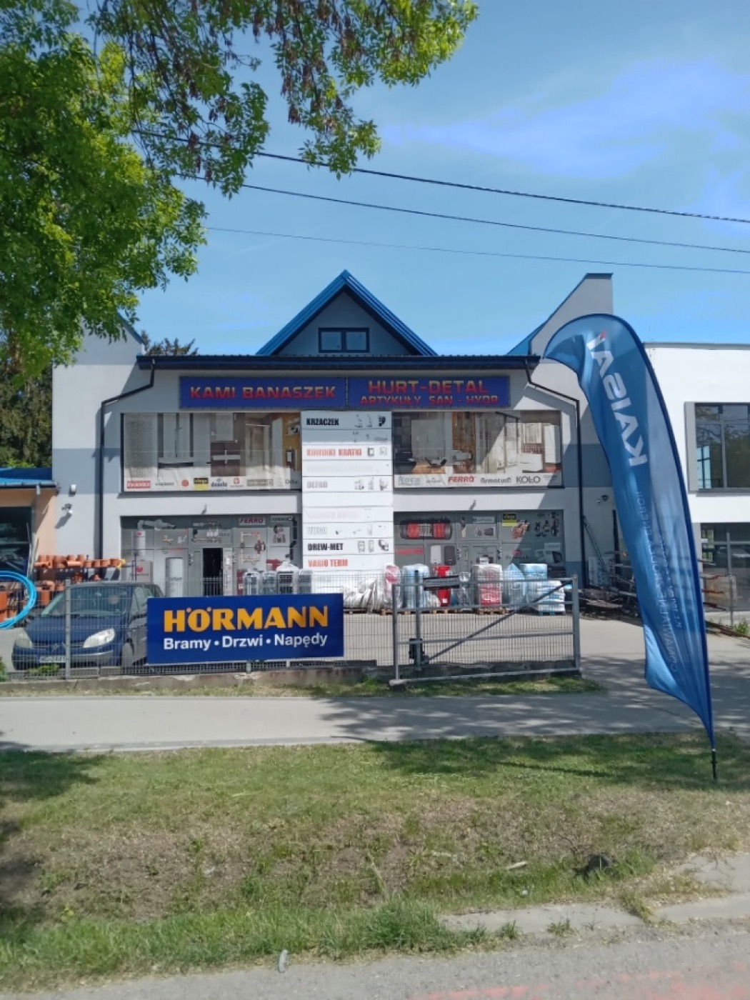

Kotły i piece
Kotły gazowe i na pellet, piece kominkowe. Podpowiemy, jaka moc pasuje do Twojego domu, zanim wydasz pieniądze.
Vaillant · Defro · Pereko · Kratki
Hurt i detal · Garwolin
Kotły, grzejniki, baterie, rury i złączki — pełne zaopatrzenie dla hydraulików i klientów indywidualnych. Sklep przy ul. Kościuszki 64A w Garwolinie.
Oferta
Towar na każdą robotę — od poprawki w łazience po instalację w budowanym domu. Czegoś nie ma na półce? Zapytaj, zwykle da się sprowadzić.
Kotły gazowe i na pellet, piece kominkowe. Podpowiemy, jaka moc pasuje do Twojego domu, zanim wydasz pieniądze.
Vaillant · Defro · Pereko · Kratki
Grzejniki pokojowe i łazienkowe, zawory i głowice termostatyczne, rozdzielacze — do nowego domu i na wymianę.
Vario Term · Galmet
Baterie kuchenne i łazienkowe, stelaże podtynkowe, syfony, zawory — jest co obejrzeć na miejscu.
Geberit · Ferro · McAlpine · Kuchinox
Systemy instalacyjne, zestawy przyłączeniowe, węże w oplocie, zawory. Odmierzamy i kompletujemy pod konkretną robotę.
Viega · Kisan
Wentylatory łazienkowe, kratki, rury i akcesoria wentylacyjne. Dobierzemy średnicę i wydajność do pomieszczenia.
Dospel
Pianki, silikony i kleje, uszczelki, taśmy i cała drobnica, której brakuje w połowie roboty.
Soudal · Penosil
Pełny opis kategorii znajdziesz na stronie Oferta.
Jak to działa
Wpadnij do sklepu albo opisz robotę przez telefon — od tego zaczynamy.
Dobierzemy towar i zbierzemy wszystko za jednym razem.
Towar czeka odłożony w sklepie przy Kościuszki 64A.
Niewykorzystany materiał przyjmiemy z powrotem — piszą o tym opinie.

O nas
Obsługujemy hydraulików i firmy budowlane na hurcie, ale tak samo chętnie sprzedamy jedną baterię czy złączkę klientowi, który wpadł po drodze.
Za ladą stoi ktoś, kto zna towar — podpowie, co wziąć, i nie naciągnie na zbędne koszty. A jak czegoś nie mamy, powiemy, gdzie to dostać.
Marki
Sprzedajemy materiały, którym ufają instalatorzy.
Opinie klientów
Średnia z 45 opinii w Google.
★★★★★„Świetne miejsce dla każdego, kto szuka artykułów sanitarnych i hydraulicznych. Mają duży wybór produktów i miłą obsługę, która zawsze chętnie doradzi.”
★★★★„Miła, profesjonalna obsługa. Polecam.”
Zadzwoń — sprawdzimy, co jest na stanie, i odłożymy towar do odbioru.
662 122 569